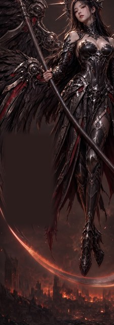
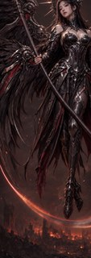

Control — untouched W1
- The exact starting point, so every claimed improvement and every unrequested change has a visible baseline
What we need from you
Renewed sign-off on this amended W1-focused plan and its $2.50 cap. Read the full ask ↓
Planned spend against the round cap$2.13 / $2.50
Choose a safe W1 editing mechanism before attempting interacting wallpaper repairs, while preserving two stakeholder-requested escape hatches that answer different questions. The main bake-off keeps one complete target across three mechanisms: remove the third lower-left wing while preserving the correct upper wings. The blank-then-restore probe asks only whether a pre-painted gap can be filled convincingly; its existing mask deliberately covers the largest clean part of the unwanted wing, not all of it. The fresh-from-spec pair asks whether continuing to repair W1 is the wrong premise. Neither probe is mislabeled as an apples-to-apples full-wing-removal contender.
The earlier twelve-choice proposal tried to finish both wallpapers while also testing three mechanisms and two models. Four review rounds found 33 issues, 15 blocking. The last gate found that the W1 wing and blade rectangles overlap by 620×270 pixels, so the second paste could silently undo the first. It also found native-extension assumptions and missing composite lineage records. This amendment keeps blade and W2 work out, and restores only the two requested non-interacting probes.
The W1 edit arms use Gemini 3.1 Flash Image at 2K. The fresh pair uses the two models that produced Scythe Valkyrie's round-1 feature winners: one bounded text-only GPT Image 2 wallpaper and one text-only Riverflow 2.5 Pro wallpaper.
Input(s)W1 base + r4-w1-ff prompt
Input(s)W1 base + r4-w1-sr prompt
Input(s)lower-wing crop + r4-w1-cropwing prompt
Input(s)partial blanked wide W1 crop + r4-w1-blank prompt
Input(s)Model-specific text-only fresh prompts: one exact-9:20 GPT Image 2 return and one Riverflow 2.5 Pro 9:16 composition probe that keeps essential content inside its centered 80%-width 9:20 crop-safe area
See this case’s inputsThat is ten paid image-generation calls: eight Flash returns in four independent two-roll Batch cells, plus two independent one-roll fresh generations. Choices C and D become full-frame review candidates through deterministic paste-back into the untouched W1 base. No candidate combines two model-edited rectangles, so one edit cannot overwrite another.
Everything that goes in, grouped by the choice it belongs to. Click any image to zoom; open a prompt to read the exact text this round spends against. Crop sets show both the cut overview and every exact output crop.
The exact starting point. It costs nothing and anchors every locality and human comparison.
scythe-valkyrie-r3-w1-rem-2
Removes the lower-left third wing on the full wallpaper. This is the standard editor control, judged as heavily on what stays unchanged as on the removal.
scythe-valkyrie-r3-w1-rem-2projects/bluemneme/scythe-valkyrie/prompts/r4-w1-ff.txt
ATTACHED IMAGE One image is attached. IMAGE 1 is a finished photorealistic vertical wallpaper of an angel-of-death valkyrie. Make one surgical edit only. EDIT — REMOVE THE LOWER WING The artwork currently has three wing masses. On the VIEWER'S LEFT, below and behind the correct upper wing, a separate third wing is rooted lower on her back and sweeps down and left. Remove that entire lower wing mass — every feather, spar and hub belonging to it — and restore the smoky red-brown haze, ruins and cloth behind it. Leave the correct upper wing exactly as it is. Add no replacement wing, limb, feather or new object. PRESERVATION Apart from that one removal, reproduce IMAGE 1 EXACTLY: the same woman, face, expression, hair, halo crown, armour, ornament, pose, scythe, hands, correct upper wings, background, lighting, colour grading, texture and framing on the same tall canvas. Do not restyle, re-light, sharpen, crop, extend or reinterpret anything. Add no text, labels, logos or watermarks.
Redraws the whole wallpaper from the same W1 reference while describing the desired two-wing result. It tests whether whole-picture guidance works better than surgical correction wording.
scythe-valkyrie-r3-w1-rem-2projects/bluemneme/scythe-valkyrie/prompts/r4-w1-sr.txt
ATTACHED IMAGE One image is attached. IMAGE 1 is a finished photorealistic vertical wallpaper of an angel-of-death valkyrie. Redraw this same picture at the same quality and framing. This arm deliberately describes the desired whole picture rather than asking for a light retouch, but the only requested content change is the lower-wing removal below. BUILD — WINGS The finished picture has exactly two wings, one on the viewer's left and one on the viewer's right, and no third wing anywhere. Preserve the correct upper wings from IMAGE 1: each keeps the same armoured hub, jointed mechanical segments, feathers, pose and silhouette. Remove only the separate lower wing mass on the VIEWER'S LEFT and restore the smoky red-brown haze, ruins and cloth behind it. Add no replacement wing, limb, feather or new object. PRESERVATION Apart from that one removal, reproduce IMAGE 1 EXACTLY: the same woman, face, expression, hair, halo crown, armour, ornament, pose, scythe, hands, correct upper wings, background, lighting, colour grading, texture and framing on the same tall canvas. Do not restyle, re-light, sharpen, crop, extend or reinterpret anything. Add no text, labels, logos or watermarks.
Edits only the lower-wing crop, then feather-composites it into the untouched W1 base. No other region can change.
scythe-valkyrie-r4-w1-wing-crop
projects/bluemneme/scythe-valkyrie/prompts/r4-w1-cropwing.txt
ATTACHED IMAGE One image is attached. IMAGE 1 is a crop from the viewer's-left side of a finished photorealistic wallpaper, against smoky red-brown haze with ruins and cloth below. Make one surgical edit only and return the same crop framing. EDIT — REMOVE THE LOWER WING The artwork currently has three wing masses. On the VIEWER'S LEFT, below and behind the correct upper wing, a separate third wing is rooted lower on her back and sweeps down and left. Remove that entire lower wing mass — every feather, spar and hub belonging to it — and restore the smoky red-brown haze, ruins and cloth behind it. Leave the correct upper wing exactly as it is. Add no replacement wing, limb, feather or new object. PRESERVATION This crop contains part of the correct upper wing as well as the unwanted lower wing. Preserve the upper wing exactly: its armoured hub, jointed mechanical segments, feathers and silhouette must not change. Apart from removing the lower wing and restoring what sat behind it, reproduce IMAGE 1 exactly at the same framing and canvas shape. Do not zoom, crop further or extend the scene. Add no new object and no text, labels, logos or watermarks.
Fills the existing partial blank inside a wide W1 context crop, then composites that context back into untouched W1. Everything outside the actual blank is protected, including material inside the wider crop. This is explicitly a background-fill feasibility probe, not complete lower-wing removal.
scythe-valkyrie-r4-w1-wing-context-blank
projects/bluemneme/scythe-valkyrie/prompts/r4-w1-blank.txt
ATTACHED IMAGE One image is attached. IMAGE 1 is a wide crop from the viewer's-left side of a finished photorealistic wallpaper, showing wing, sky, cloth and ruins. Part of it has been painted out to a flat blank area. Fill only that blank; this arm deliberately tests gap-fill quality, not complete removal of every lower-wing remnant outside the blank. EDIT — FILL THE BLANK AREA Fill the blanked region with the background and scenery that belongs behind it — the same smoky red-brown haze, the ruins below, and any cloth that continues into it — matching the surrounding lighting, colour and grain so the join is invisible. Do NOT paint a wing, limb, feather or any part of a figure into that area. It should read as if nothing was ever there. PRESERVE — THE UPPER WING Change nothing on the upper wing. It is an articulated mechanical limb — an armoured shoulder hub, a chain of armoured segments linked by visible mechanical joints, and feathers hanging below and behind. Do not add a wing, limb or feather anywhere in this crop. PRESERVATION Outside the blanked area, reproduce IMAGE 1 EXACTLY: the same wing, sky, cloth, ruins, lighting, colour, grain, framing and canvas shape. Do not zoom, crop further or extend the scene. Add no new object and no text, labels, logos or watermarks.
Two text-only challengers — one exact-9:20 GPT Image 2 return and one Riverflow 2.5 Pro 9:16 composition probe judged inside its centered 9:20 safe area — test whether a new spec-v0.6 wallpaper is more promising than continued W1 repair. Any Riverflow keeper needs a later approved crop or extension.
Text-only — no image inputs; the prompt below is the whole input.
projects/bluemneme/scythe-valkyrie/prompts/r4-fresh.txt
OUTPUT AND CAMERA A photorealistic full-body cinematic character render of an original character, composed as a premium PHONE WALLPAPER in exact tall 9:20 portrait orientation for a 1080x2400 screen. Show ONE figure only, in a NEAR-FRONTAL THREE-QUARTER view, large in frame: she fills most of the frame height and is the unambiguous subject, with softly dramatic lighting and crisp character detail over a quieter background. Keep the complete scythe from spear counterweight to blade tip inside the 9:20 composition-safe area; the wings may leave the outer frame after their roots, segments and bends are legible rather than shrinking her. This is character concept art, not a photograph of a toy. BUILD — CHARACTER, ARMOUR AND CROWN An original angel-of-death valkyrie: elegant, ominous and ceremonial. She has a slender adult feminine build with realistic proportions, mature East Asian features, a calm direct gaze and a softly angular oval face. Her long dark hair is elegant and sculptural. Use an original face, never a real person's likeness. Her sleek solid death-valkyrie armour uses dark gunmetal and black primary surfaces, silver structural framing and edge highlights, and restrained deep-red accents. The lower body has a sectioned metal skirt/cloak hybrid over separate shaped leg armour and armoured boots. Leave a modest gap between chestplate and throat. Make panel lines bold and sculptural and express the skull-and-death motif through original forms, never printed graphics. She wears NO hood or mantle. Behind her head, build a solidly mounted spiky death crown: radiating dark blades in a deliberately BROKEN, PARTIAL arc, never a full circle and never an existing franchise halo. BUILD — WINGS Exactly two wing masses in total, one rooted on the viewer's left and one rooted on the viewer's right; never a third wing and never both wings on one side. Each has an explicit solid root at the upper back. Mix crow-like feathering with layered dark metal wing-blades, silver structural framing and restrained red accents. Construct each wing as an articulated mechanical limb, a machined bird-wing skeleton rather than one spar: an armoured shoulder hub followed by three armoured segments linked by visible engineered hub, pivot or knuckle joints. The continuous upper edge of that jointed limb chain is the wing's top silhouette, with a legible bend at every joint. All feathers, wing-blades and spikes hang below and behind it; no feather tuft, spar or spike projects above that top contour. One wing rises toward upper viewer-right and the other sweeps down and out toward lower viewer-left. The wings may leave the outer frame only after their roots, segments and bends are legible. BUILD — SCYTHE One great scythe and no other prop. Its haft is one perfectly straight cylindrical pole, never curved, kinked or faceted, armoured in the suit's design language, with a spear-like counterweight projecting beyond the upper grip. One long blade leaves the ornate mechanical head roughly perpendicular to the haft, carries mostly outward and curves upward only slightly so its tip finishes roughly horizontal: one smooth, consistently curved shallow sweep on the order of a quarter to a third of a circle, never a hook or half-circle and never curling back toward a wing. A short counter-spike no longer than the head is wide is allowed, but never a second long blade. Visible background separates the blade from both wings along its whole length. The upper hand grips around waist level on the viewer's left and the lower hand grips beside the upper thigh on the viewer's right. Both grips are widely separated, unmistakable five-fingered wraps with visible thumbs and unbroken shoulder-to-hand anatomy. POSE AND COMPOSITION She levitates with both feet clearly above the ground and no visible support, poised, statuesque and ominous in a controlled near-frontal three-quarter portrait, never a mid-swing action frame. Hold a pronounced vertical S-curve: pelvis under a lifted backward-arched chest, head tilted back and sideways while her eyes turn toward the viewer. The viewer-right leg is long and nearly straight; the viewer-left leg is relaxed and slightly bent with its pointed foot visibly lifted. Hair and cloth remain mostly still. The haft cuts steeply from upper viewer-left to lower viewer-right, passing BEHIND or immediately alongside the body, never in front of it and never through the torso. Its spear counterweight is visible beyond the upper grip. The ornate blade head sits low on viewer-right, and only the single shallow crescent sweeps low across IN FRONT OF the legs toward lower viewer-left with a visible background gap proving clearance from the body. Keep the complete counterweight, head and blade tip within the central 9:20 composition-safe area. BACKGROUND AND GLOW — EMBER AFTERMATH Far below and behind her, show a ruined city reduced to low broken silhouettes and rubble, with drifting smoke, sparse rising embers and deep warm ember light low under a dark sky. Keep the background soft, low-contrast and uncluttered so the woman dominates. A subtle ember-orange radiance may trace blade edge, crown spikes and wings; keep it restrained and dim, with no lens flare, bright beam or explosion of light. EXCLUSIONS No copied franchise character, costume, halo or wing assembly; no celebrity likeness. No support structure, staff, firearm or loose hand prop. No transparent or see-through material. No presentation card, text, labels, logos, signatures or watermarks.
projects/bluemneme/scythe-valkyrie/prompts/r4-fresh-riverflow.txt
OUTPUT AND CAMERA A photorealistic full-body cinematic character render of an original character, composed as a premium PHONE WALLPAPER in exact tall 9:16 portrait orientation. Reserve the CENTERED 80% OF THE CANVAS WIDTH as the exact 9:20 crop-safe area: keep the entire figure, crown, both wing roots and articulated segments and bends, the complete scythe, and every other essential character feature inside that central band. Only nonessential distal wing feathers may enter the outer 10% margin on either side, after the roots, segments and bends are fully legible; never place essential content there. Show ONE figure only, in a NEAR-FRONTAL THREE-QUARTER view, large in frame: she fills most of the frame height and is the unambiguous subject, with softly dramatic lighting and crisp character detail over a quieter background. This is character concept art, not a photograph of a toy. BUILD — CHARACTER, ARMOUR AND CROWN An original angel-of-death valkyrie: elegant, ominous and ceremonial. She has a slender adult feminine build with realistic proportions, mature East Asian features, a calm direct gaze and a softly angular oval face. Her long dark hair is elegant and sculptural. Use an original face, never a real person's likeness. Her sleek solid death-valkyrie armour uses dark gunmetal and black primary surfaces, silver structural framing and edge highlights, and restrained deep-red accents. The lower body has a sectioned metal skirt/cloak hybrid over separate shaped leg armour and armoured boots. Leave a modest gap between chestplate and throat. Make panel lines bold and sculptural and express the skull-and-death motif through original forms, never printed graphics. She wears NO hood or mantle. Behind her head, build a solidly mounted spiky death crown: radiating dark blades in a deliberately BROKEN, PARTIAL arc, never a full circle and never an existing franchise halo. BUILD — WINGS Exactly two wing masses in total, one rooted on the viewer's left and one rooted on the viewer's right; never a third wing and never both wings on one side. Each has an explicit solid root at the upper back. Mix crow-like feathering with layered dark metal wing-blades, silver structural framing and restrained red accents. Construct each wing as an articulated mechanical limb, a machined bird-wing skeleton rather than one spar: an armoured shoulder hub followed by three armoured segments linked by visible engineered hub, pivot or knuckle joints. The continuous upper edge of that jointed limb chain is the wing's top silhouette, with a legible bend at every joint. All feathers, wing-blades and spikes hang below and behind it; no feather tuft, spar or spike projects above that top contour. One wing rises toward upper viewer-right and the other sweeps down and out toward lower viewer-left. The wings may leave the outer frame only after their roots, segments and bends are legible. BUILD — SCYTHE One great scythe and no other prop. Its haft is one perfectly straight cylindrical pole, never curved, kinked or faceted, armoured in the suit's design language, with a spear-like counterweight projecting beyond the upper grip. One long blade leaves the ornate mechanical head roughly perpendicular to the haft, carries mostly outward and curves upward only slightly so its tip finishes roughly horizontal: one smooth, consistently curved shallow sweep on the order of a quarter to a third of a circle, never a hook or half-circle and never curling back toward a wing. A short counter-spike no longer than the head is wide is allowed, but never a second long blade. Visible background separates the blade from both wings along its whole length. The upper hand grips around waist level on the viewer's left and the lower hand grips beside the upper thigh on the viewer's right. Both grips are widely separated, unmistakable five-fingered wraps with visible thumbs and unbroken shoulder-to-hand anatomy. POSE AND COMPOSITION She levitates with both feet clearly above the ground and no visible support, poised, statuesque and ominous in a controlled near-frontal three-quarter portrait, never a mid-swing action frame. Hold a pronounced vertical S-curve: pelvis under a lifted backward-arched chest, head tilted back and sideways while her eyes turn toward the viewer. The viewer-right leg is long and nearly straight; the viewer-left leg is relaxed and slightly bent with its pointed foot visibly lifted. Hair and cloth remain mostly still. The haft cuts steeply from upper viewer-left to lower viewer-right, passing BEHIND or immediately alongside the body, never in front of it and never through the torso. Its spear counterweight is visible beyond the upper grip. The ornate blade head sits low on viewer-right, and only the single shallow crescent sweeps low across IN FRONT OF the legs toward lower viewer-left with a visible background gap proving clearance from the body. Keep the complete counterweight, head and blade tip inside the centered 80%-width 9:20 crop-safe area of the 9:16 canvas. BACKGROUND AND GLOW — EMBER AFTERMATH Far below and behind her, show a ruined city reduced to low broken silhouettes and rubble, with drifting smoke, sparse rising embers and deep warm ember light low under a dark sky. Keep the background soft, low-contrast and uncluttered so the woman dominates. A subtle ember-orange radiance may trace blade edge, crown spikes and wings; keep it restrained and dim, with no lens flare, bright beam or explosion of light. EXCLUSIONS No copied franchise character, costume, halo or wing assembly; no celebrity likeness. No support structure, staff, firearm or loose hand prop. No transparent or see-through material. No presentation card, text, labels, logos, signatures or watermarks.
The wider draft contained useful experiments. After the two restored probes, these remain deferred rather than rejected:
| Mechanism | What it is meant to answer | Safe re-entry condition |
|---|---|---|
| Complete-mask blank then restore | Whether blanking the entire unwanted wing beats the deliberately partial R4 feasibility probe | Build and hand-review a complete mask as the next round's exact input; do not reinterpret R4's partial mask as complete |
| Blade crop repair, W1 and W2 | Whether the chosen crop-local method can reshape the scythe to profile B without repainting either wallpaper | Run after R4 chooses a mechanism; keep blade and wing edits in separate ordered rounds because their W1 rectangles overlap |
| W2 wing-top crop repair | Whether spikes above W2's retained wing can be removed locally | Carry it into the W2 repair round with the same exact-input and paste-back locality gates used here |
| Riverflow editor challenger | Whether W2's originating editor preserves that image better than Flash | Compare it against the chosen Flash mechanism on one identical, complete edit contract |
| Cleanup pass | Whether a final full-frame pass can hide composite joins without undoing accepted repairs | Only after an exact composite input is pinned; never use a conditional “best assembled image” input |
| W2 hand/dagger repair | Whether the proven R3 patch recipe can remove the loose dagger cleanly | Run last on the selected W2 result so no later full-frame pass repaints the hand |
| Sibling transplant and identity restore | Whether existing registered R3 regions can avoid paid work or restore a rerendered face | Include them as explicit arms inside their own future approved runbook/round, with lineage and locality evidence |
R5 should select one coherent next step after R4. Each later round still needs its own runbook, exact inputs, grading contract and spend approval. This catalog grants no authority to run, generate, composite, promote or spend on any listed mechanism; even a free keeper-producing trial stays blocked until its future round is approved and started.
R4 produces three separate decisions, not one false ranking. Jake's and Dimitri's eyes decide the art calls; machine evidence establishes what changed, whether files are safe to compare, and which contract applies.
region_edit.py verifies from the written PNG that each composite changes zero pixels outside its declared rectangle. edit_diff.py records pixel, perceptual, silhouette and regional measures for the eight W1-derived candidates; it is deliberately not run against the unrelated fresh images. A fresh-context crop audit applies the correct family contract to all ten candidates. Once all ten FAST records, eight difference reports and four locality reports exist, publish a clearly labelled PROVISIONAL — slow checks pending review panel.blind_detect_round.py manifest covers all ten full-frame candidates in two Batch waves. The committed brief dispatches explicitly between complete W1 removal, partial blank-fill feasibility and standalone spec-v0.6 wallpaper grading. Append its records, reconcile disagreement with the crop audit, then refresh the same panel as COMPLETE.No R4 result is called a finished wallpaper and no blade/W2 work starts until the complete panel has a recorded human verdict.
Renewed sign-off on this amended W1-focused plan and its $2.50 cap. The old $5.00 proposal and the later $1.00 narrowed proposal are both superseded and authorize nothing. Sign-off covers the three-way W1 bake-off, the candid partial blank feasibility probe, the two-model fresh-from-spec probe, and the artifact-family-specific judging contract above.
Eight Flash 3.1 Batch edits at a conservative $0.065 each reserve $0.52. The bounded 1152×2560 GPT Image 2 call reserves at most $0.58. The Riverflow 4K 9:16 call reserves $0.53: the highest identical historical call cost $0.478668, and the repository ceiling adds 10% to $0.526535 before rounding upward. That is $1.63 images. FAST evaluation is free. SLOW evaluation reserves $0.50 ($0.05 × ten reviewable outputs). Planned total is $2.13 against a proposed $2.50 USD cap, with no Meshy credits. Live wrapper preflights remain authoritative.
scythe-valkyrie-r3-w1-rem-2 (Dimitri's W1 base), its deterministic lower-wing crop scythe-valkyrie-r4-w1-wing-crop, the partial blank scythe-valkyrie-r4-w1-wing-context-blank, spec v0.6, and six committed R4 prompt fileshttps://lackofcheese.github.io/ai-stl-review/reviews/bluemneme/scythe-valkyrie/r4-runbook/; Discord header 1537333040949239810 and its append-only thread carry the amendment historyprompts, matrix, commands (pipeline detail)
spec.md remains at v0.6 in this PR. The profile-B blade decision is durable in round 3 feedback, but R4 neither edits nor grades the blade; the spec amendment belongs with the later blade-application plan.prompts/r4-compose.py. The surgical whole-frame and crop prompts share one single-sourced physical description of the wing to remove. The steered prompt expresses the same complete target as a whole-picture redraw. The crop prompt separately protects the one retained upper wing. The blank prompt names the partial-mask limitation; the model-specific fresh prompts are concise model-visible renderings of spec v0.6 and each remains below the wrappers' 8192-byte prompt ceiling. Riverflow's version requests its native 9:16 canvas and explicitly reserves the centered 80% width as the later 9:20 crop-safe area. The committed prompts/r4-review-brief.txt dispatches by artifact family for all ten paid blind comparisons.resolution=4K and aspect_ratio=9:16; the later output-aspect assertion is evidence about the returned image, not a substitute for that pre-spend gate.lineage.json: the lower-wing crop (0,940)-(620,2320) and the wide context blank, derived from context crop (0,500)-(900,3058) with only relative region (20,1040)-(430,1790) painted out. Dimitri confirmed the W1 crop overlay on 2026-08-13. The overlay is explanatory evidence, not a provider input, so it is not listed as a case base.tools/region_edit.py and tools/edit_diff.py are on current main from PR #494. Native model return extensions are resolved after the calls land; commands never assume .jpg. Every derived composite is appended to lineage.json idempotently before screening or review.| # | Source / base (input) | Model / prompt | Out stem (output) | Rolls | Wave |
|---|---|---|---|---|---|
| 1 | r3-w1-rem-2 (one image) | flash31 · prompts/r4-w1-ff.txt | scythe-valkyrie-r4-w1-ff | 2 | 1 |
| 2 | r3-w1-rem-2 (one image) | flash31 · prompts/r4-w1-sr.txt | scythe-valkyrie-r4-w1-sr | 2 | 1 |
| 3 | r4-w1-wing-crop (one image) | flash31 · prompts/r4-w1-cropwing.txt | scythe-valkyrie-r4-w1-cropwing | 2 | 1 |
| 4 | r4-w1-wing-context-blank (one image) | flash31 · prompts/r4-w1-blank.txt | scythe-valkyrie-r4-w1-blank | 2 | 1 |
| 5 | text only; no images | gptimage2 · prompts/r4-fresh.txt | scythe-valkyrie-r4-fresh-gptimage2 | 1 | 1 |
| 6 | text only; no images | riverflow25 · prompts/r4-fresh-riverflow.txt | scythe-valkyrie-r4-fresh-riverflow25 | 1 | 1 |
All six rows are independent and submit in parallel. Rows 1–4 use grouped gemini_gen.py --rolls 2 calls, so the round deliberately stays outside gen_round.py coordinator v1. Record each printed Gemini Batch run id and resume that exact caller run after interruption. Rows 5–6 are synchronous and non-resumable: a missing output after submission is an ambiguous manual stop requiring provider/spend reconciliation and a rounds.md record before an explicitly authorized retry.
Run this before any paid command below:
set -euo pipefail
git fetch origin main
test "$(git rev-parse HEAD)" = "$(git rev-parse origin/main)"
python3 tools/round_gate.py verify \
--file projects/bluemneme/scythe-valkyrie/round-gates.jsonl --round r4 \
--published-html "${AI_STL_REVIEW_DIR:-../ai-stl-review}/reviews/bluemneme/scythe-valkyrie/r4-runbook/index.html"
test "$(git rev-parse HEAD)" = "$(git rev-parse origin/main)"
# Append the Discord start reply under header 1537333040949239810, then
# advance that header using the completed reply's event id. Only then run spend.On mog-pharau, set PY to the base checkout's shared virtual environment; else use the environment's repository Python.
set -euo pipefail
T=projects/bluemneme/scythe-valkyrie
G="$T/generated"
PY="${AI_STL_PYTHON:-python3}"
mkdir -p "$G" "$T/notes"
RIVER_PARAMS="$T/notes/r4-riverflow-live-params.txt"
"$PY" tools/openrouter_gen.py \
--params sourceful/riverflow-v2.5-pro | tee "$RIVER_PARAMS"
"$PY" - "$RIVER_PARAMS" <<'PY'
import json
import pathlib
import sys
providers = []
current = None
for line in pathlib.Path(sys.argv[1]).read_text().splitlines():
if line.startswith("provider: "):
current = {"name": line.removeprefix("provider: "), "params": {}}
providers.append(current)
elif current is not None and line.startswith(" ") and not line.startswith(" price: "):
key, encoded = line.strip().split(" ", 1)
current["params"][key] = json.loads(encoded)
if not providers:
raise SystemExit("Riverflow live schema returned no routable providers")
for provider in providers:
for key, required in (("resolution", "4K"), ("aspect_ratio", "9:16")):
spec = provider["params"].get(key) or {}
if spec.get("type") != "enum" or required not in spec.get("values", []):
raise SystemExit(
f"{provider['name']}: Riverflow live schema does not support "
f"{key}={required}")
print("Riverflow live schema supports resolution=4K and aspect_ratio=9:16")
PY
bash tools/drive_sync.sh pull "$G"
W1="$G/scythe-valkyrie-r3-w1-rem-2.jpg"
CROP="$G/scythe-valkyrie-r4-w1-wing-crop.png"
BLANK="$G/scythe-valkyrie-r4-w1-wing-context-blank.png"
test -f "$W1"
test -f "$CROP"
test -f "$BLANK"
for stem in \
scythe-valkyrie-r4-w1-ff scythe-valkyrie-r4-w1-sr \
scythe-valkyrie-r4-w1-cropwing scythe-valkyrie-r4-w1-blank \
scythe-valkyrie-r4-fresh-gptimage2 \
scythe-valkyrie-r4-fresh-riverflow25; do
if find "$G" -maxdepth 1 -type f -name "$stem-*" -print -quit | grep -q .; then
echo "$stem already has an output; use its cell-specific recovery path" >&2
exit 1
fi
done
PIDS=()
gen() { # gen <stem> <prompt> <log> <image>
local stem="$1" prompt="$2" log="$3" image="$4"
( set -o pipefail
"$PY" tools/gemini_gen.py --prompt-file "$prompt" --image "$image" \
--out-dir "$G" --out-stem "$stem" \
--model gemini-3.1-flash-image --image-size 2K --rolls 2 \
--drive-sync 2>&1 | tee -a "$T/notes/$log" ) &
PIDS+=("$!")
}
gen scythe-valkyrie-r4-w1-ff \
"$T/prompts/r4-w1-ff.txt" r4-w1-ff.log "$W1"
gen scythe-valkyrie-r4-w1-sr \
"$T/prompts/r4-w1-sr.txt" r4-w1-sr.log "$W1"
gen scythe-valkyrie-r4-w1-cropwing \
"$T/prompts/r4-w1-cropwing.txt" r4-w1-cropwing.log \
"$CROP"
gen scythe-valkyrie-r4-w1-blank \
"$T/prompts/r4-w1-blank.txt" r4-w1-blank.log "$BLANK"
( set -o pipefail
"$PY" tools/openai_image_gen.py \
--prompt-file "$T/prompts/r4-fresh.txt" \
--out-dir "$G" --out-stem scythe-valkyrie-r4-fresh-gptimage2 \
--size 1152x2560 --quality high --drive-sync \
2>&1 | tee -a "$T/notes/r4-fresh-gptimage2.log" ) &
PIDS+=("$!")
( set -o pipefail
"$PY" tools/openrouter_gen.py \
--prompt-file "$T/prompts/r4-fresh-riverflow.txt" \
--out-dir "$G" --out-stem scythe-valkyrie-r4-fresh-riverflow25 \
--model sourceful/riverflow-v2.5-pro --resolution 4K --aspect 9:16 \
--drive-sync 2>&1 | tee -a "$T/notes/r4-fresh-riverflow25.log" ) &
PIDS+=("$!")
FAIL=0
for pid in "${PIDS[@]}"; do wait "$pid" || FAIL=1; done
bash tools/drive_sync.sh push "$G"
(( FAIL == 0 )) || {
echo "a cell failed — apply only its recorded recovery path" >&2
exit 1
}For a Gemini interruption, recover that cell's exact batch run: id from its log and call only gemini_gen.py --resume-run RUN_ID. For either synchronous fresh cell, do not retry this block: reconcile provider activity, balance, the spend ledger and Drive, record the resolution in rounds.md, then obtain explicit retry authorization if the planned -1 artifact is still absent.
Resolve each provider-native extension, create four deterministic composites, and append their lineage records. The resolver requires exactly one supported image for each planned roll, so a missing or ambiguous output fails closed.
set -euo pipefail
T=projects/bluemneme/scythe-valkyrie
G="$T/generated"
PY="${AI_STL_PYTHON:-python3}"
W1="$G/scythe-valkyrie-r3-w1-rem-2.jpg"
native_roll() { # native_roll <stem> <roll>
local stem="$1" roll="$2"
local hits=()
mapfile -t hits < <(find "$G" -maxdepth 1 -type f \
\( -name "$stem-$roll.png" -o -name "$stem-$roll.jpg" \
-o -name "$stem-$roll.jpeg" -o -name "$stem-$roll.webp" \) -print)
(( ${#hits[@]} == 1 )) || {
echo "$stem-$roll: expected one native image, found ${#hits[@]}" >&2
return 1
}
printf '%s\n' "${hits[0]}"
}
append_composite() { # id out raw prompt note
"$PY" - "$T/lineage.json" "$1" "$2" "$3" "$W1" "$4" "$5" <<'PY'
import datetime, pathlib, sys
from tools.genlog import append_lineage_record
lineage, artifact_id, out, raw, base, prompt, note = sys.argv[1:]
append_lineage_record(pathlib.Path(lineage), {
"id": artifact_id,
"kind": "derived-composite",
"files": [out],
"input_images": [raw, base],
"prompt_file": prompt,
"notes": note,
"generated": datetime.datetime.now().isoformat(timespec="seconds"),
}, unique_by=("id",))
PY
}
for n in 1 2; do
raw="$(native_roll scythe-valkyrie-r4-w1-cropwing "$n")"
out="$G/scythe-valkyrie-r4-w1-cropwing-comp-$n.png"
report="$T/notes/scythe-valkyrie-r4-w1-cropwing-comp-$n-locality.json"
"$PY" tools/region_edit.py composite --base "$W1" --edit "$raw" \
--rect 0,940,620,2320 --out "$out" --json "$report"
test "$(jq -r .changed_outside_rect "$report")" = 0
append_composite "scythe-valkyrie-r4-w1-cropwing-comp-$n" "$out" "$raw" \
"$T/prompts/r4-w1-cropwing.txt" \
"R4 lower-wing crop roll $n feather-composited into the untouched W1 base at (0,940)-(620,2320); locality verified from written PNG."
raw="$(native_roll scythe-valkyrie-r4-w1-blank "$n")"
out="$G/scythe-valkyrie-r4-w1-blank-comp-$n.png"
report="$T/notes/scythe-valkyrie-r4-w1-blank-comp-$n-locality.json"
"$PY" tools/region_edit.py composite --base "$W1" --edit "$raw" \
--rect 0,500,900,3058 --out "$out" --json "$report"
test "$(jq -r .changed_outside_rect "$report")" = 0
append_composite "scythe-valkyrie-r4-w1-blank-comp-$n" "$out" "$raw" \
"$T/prompts/r4-w1-blank.txt" \
"R4 partial blank-fill roll $n feather-composited into untouched W1 at context rect (0,500)-(900,3058); locality verified. The input blank covers only relative (20,1040)-(430,1790), so this tests fill feasibility rather than complete wing removal."
done
bash tools/drive_sync.sh push "$G"
# Independently enumerate the exact all-and-only-ten review set. The expected
# ids are literal plan data; the TSV resolves each provider-native filename.
EXPECTED_IDS="$T/notes/r4-review-expected-ids.txt"
EXPECTED_TSV="$T/notes/r4-review-expected.tsv"
cat > "$EXPECTED_IDS" <<'EOF'
scythe-valkyrie-r4-fresh-gptimage2-1
scythe-valkyrie-r4-fresh-riverflow25-1
scythe-valkyrie-r4-w1-blank-comp-1
scythe-valkyrie-r4-w1-blank-comp-2
scythe-valkyrie-r4-w1-cropwing-comp-1
scythe-valkyrie-r4-w1-cropwing-comp-2
scythe-valkyrie-r4-w1-ff-1
scythe-valkyrie-r4-w1-ff-2
scythe-valkyrie-r4-w1-sr-1
scythe-valkyrie-r4-w1-sr-2
EOF
: > "$EXPECTED_TSV"
for stem in scythe-valkyrie-r4-w1-ff scythe-valkyrie-r4-w1-sr; do
for n in 1 2; do
image="$(native_roll "$stem" "$n")"
printf '%s\t%s\n' "$stem-$n" "$image" >> "$EXPECTED_TSV"
done
done
for family in blank cropwing; do
for n in 1 2; do
artifact="scythe-valkyrie-r4-w1-$family-comp-$n"
image="$G/$artifact.png"
test -f "$image"
printf '%s\t%s\n' "$artifact" "$image" >> "$EXPECTED_TSV"
done
done
for stem in scythe-valkyrie-r4-fresh-gptimage2 \
scythe-valkyrie-r4-fresh-riverflow25; do
image="$(native_roll "$stem" 1)"
printf '%s\t%s\n' "$stem-1" "$image" >> "$EXPECTED_TSV"
done
diff -u "$EXPECTED_IDS" <(cut -f1 "$EXPECTED_TSV" | LC_ALL=C sort)
# FAST deterministic reports for the eight W1-derived candidates only.
EDIT_TSV="$T/notes/r4-w1-edit-candidates.tsv"
awk -F '\t' '$1 ~ /r4-w1-/' "$EXPECTED_TSV" > "$EDIT_TSV"
test "$(wc -l < "$EDIT_TSV")" -eq 8
while IFS=$'\t' read -r artifact image; do
report="$T/notes/$artifact-edit-diff.json"
region="removal=0,940,620,2320"
if [[ "$artifact" == scythe-valkyrie-r4-w1-blank-comp-* ]]; then
# The provider saw the wider context, but only this absolute W1 rectangle
# was blanked. Its complement therefore measures every protected pixel,
# including protected sky/wing/cloth/ruins inside the provider crop.
region="partial_blank=20,1540,430,2290"
fi
"$PY" tools/edit_diff.py --base "$W1" --edit "$image" \
--canvas resize-edit --region "$region" --json "$report"
test -s "$report"
jq -e '.canvas.anisotropy <= 0.02' "$report" > /dev/null
done < "$EDIT_TSV"
# Independently check the two planned fresh aspect contracts.
GPT_FRESH="$(native_roll scythe-valkyrie-r4-fresh-gptimage2 1)"
RIVER_FRESH="$(native_roll scythe-valkyrie-r4-fresh-riverflow25 1)"
"$PY" - "$GPT_FRESH" "$RIVER_FRESH" <<'PY'
import sys
from PIL import Image
gpt = Image.open(sys.argv[1]); river = Image.open(sys.argv[2])
assert gpt.size == (1152, 2560), gpt.size
target = 9 / 16
assert abs((river.width / river.height) / target - 1) <= 0.02, river.size
PY
# A fresh-context crop auditor separately appends one review record for each
# literal id in EXPECTED_IDS, using a reviewer id ending in "-crop-audit".
# This predicate fails on a missing, mislabelled, or extra R4 candidate audit;
# duplicate append-only corrections for the same expected id remain valid.
fast_audits_exact() {
jq -e -s --rawfile expected "$EXPECTED_IDS" '
($expected | split("\n") | map(select(length > 0)) | sort) as $want
| ([.[]
| select((.reviewer // "") | endswith("-crop-audit"))
| select((.artifact // "") | startswith("scythe-valkyrie-r4-"))
| .artifact] | unique | sort) == $want
' "$T/reviews.jsonl" > /dev/null
}
fast_audits_exact
# Do not publish the PROVISIONAL panel until the exact FAST audit predicate
# above passes and all eight edit reports and four locality reports are present.
# SLOW paid lane: build the detector manifest from that independently checked
# TSV and use only the committed artifact-family comparison brief.
MANIFEST="$T/notes/r4-blind-manifest.json"
jq -Rn '[inputs | split("\t") | {artifact: .[0], image: .[1]}] | {items: .}' \
< "$EXPECTED_TSV" > "$MANIFEST"
diff -u "$EXPECTED_IDS" <(jq -r '.items[].artifact' "$MANIFEST" | LC_ALL=C sort)
# One description Batch wave, then one dependent comparison wave. Re-running
# resumes the recorded caller run; it never submits a replacement run.
DETECT_LOG="$T/notes/r4-blind-detect.log"
DETECT_RUN=""
if [[ -f "$DETECT_LOG" ]]; then
DETECT_RUN="$(sed -n 's/^batch run: //p' "$DETECT_LOG" | head -n 1)"
fi
if [[ -n "$DETECT_RUN" ]]; then
"$PY" tools/blind_detect_round.py --resume-run "$DETECT_RUN"
else
"$PY" tools/blind_detect_round.py \
--manifest "$MANIFEST" \
--spec-file "$T/prompts/r4-review-brief.txt" \
--reviews "$T/reviews.jsonl" 2> >(tee "$DETECT_LOG" >&2)
DETECT_RUN="$(sed -n 's/^batch run: //p' "$DETECT_LOG" | head -n 1)"
test -n "$DETECT_RUN"
fi
# COMPLETE requires blind-detect records from this run for all and only the
# literal ten ids. Coordinator success or records from another run do not pass.
jq -e -s --arg run "$DETECT_RUN" --rawfile expected "$EXPECTED_IDS" '
($expected | split("\n") | map(select(length > 0)) | sort) as $want
| ([.[] | select(.reviewer == "blind-detect"
and .batch_run_id == $run)
| .artifact] | unique | sort) == $want
' "$T/reviews.jsonl" > /dev/null
fast_audits_exactOnly after both exact-set postconditions pass, reconcile any SLOW/FAST disagreement and refresh the same review panel from PROVISIONAL to COMPLETE.
projects/bluemneme/scythe-valkyrie/prompts/r3-w1-rem.txt
ATTACHED IMAGE One image is attached. IMAGE 1 is a finished photorealistic wallpaper artwork of an angel-of-death valkyrie. Your task is a SURGICAL EDIT: apply ONLY the corrections listed below and leave everything else untouched. EDIT — BLADE COUNT The scythe must have exactly ONE blade. In IMAGE 1 a second, parallel blade arc splits off below the main blade as it rises toward the ornate skull head on the lower VIEWER'S RIGHT. Remove the extra arc and close the gap so the weapon carries ONE single continuous blade, with the surrounding background restored where the extra arc was. EDIT — WING TOPS Feather tufts stick UP above the mechanical wing joints at the top of the wings. Remove every feather ABOVE the mechanical joints on both wings, restoring clean background sky above each joint. Feathers belong only BELOW and BEHIND the mechanical joint line; the joints themselves and the wings below them stay exactly as they are. PRESERVATION Apart from the edits listed above, reproduce IMAGE 1 EXACTLY: the same character, face, expression, hair, halo crown, armour and ornament detail, pose, wings, scythe, background, lighting, colour grading, and level of detail, at the same framing on the same tall canvas shape as IMAGE 1. Do not restyle, re-light, sharpen, or reinterpret anything. Add no new objects, no extra glow, and no text, labels, logos, or watermarks.

projects/bluemneme/scythe-valkyrie/prompts/r3-w1-rem.txt
ATTACHED IMAGE One image is attached. IMAGE 1 is a finished photorealistic wallpaper artwork of an angel-of-death valkyrie. Your task is a SURGICAL EDIT: apply ONLY the corrections listed below and leave everything else untouched. EDIT — BLADE COUNT The scythe must have exactly ONE blade. In IMAGE 1 a second, parallel blade arc splits off below the main blade as it rises toward the ornate skull head on the lower VIEWER'S RIGHT. Remove the extra arc and close the gap so the weapon carries ONE single continuous blade, with the surrounding background restored where the extra arc was. EDIT — WING TOPS Feather tufts stick UP above the mechanical wing joints at the top of the wings. Remove every feather ABOVE the mechanical joints on both wings, restoring clean background sky above each joint. Feathers belong only BELOW and BEHIND the mechanical joint line; the joints themselves and the wings below them stay exactly as they are. PRESERVATION Apart from the edits listed above, reproduce IMAGE 1 EXACTLY: the same character, face, expression, hair, halo crown, armour and ornament detail, pose, wings, scythe, background, lighting, colour grading, and level of detail, at the same framing on the same tall canvas shape as IMAGE 1. Do not restyle, re-light, sharpen, or reinterpret anything. Add no new objects, no extra glow, and no text, labels, logos, or watermarks.
projects/bluemneme/scythe-valkyrie/prompts/r3-w1-rem.txt
ATTACHED IMAGE One image is attached. IMAGE 1 is a finished photorealistic wallpaper artwork of an angel-of-death valkyrie. Your task is a SURGICAL EDIT: apply ONLY the corrections listed below and leave everything else untouched. EDIT — BLADE COUNT The scythe must have exactly ONE blade. In IMAGE 1 a second, parallel blade arc splits off below the main blade as it rises toward the ornate skull head on the lower VIEWER'S RIGHT. Remove the extra arc and close the gap so the weapon carries ONE single continuous blade, with the surrounding background restored where the extra arc was. EDIT — WING TOPS Feather tufts stick UP above the mechanical wing joints at the top of the wings. Remove every feather ABOVE the mechanical joints on both wings, restoring clean background sky above each joint. Feathers belong only BELOW and BEHIND the mechanical joint line; the joints themselves and the wings below them stay exactly as they are. PRESERVATION Apart from the edits listed above, reproduce IMAGE 1 EXACTLY: the same character, face, expression, hair, halo crown, armour and ornament detail, pose, wings, scythe, background, lighting, colour grading, and level of detail, at the same framing on the same tall canvas shape as IMAGE 1. Do not restyle, re-light, sharpen, or reinterpret anything. Add no new objects, no extra glow, and no text, labels, logos, or watermarks.
(no prompt recorded)

(no prompt recorded)
